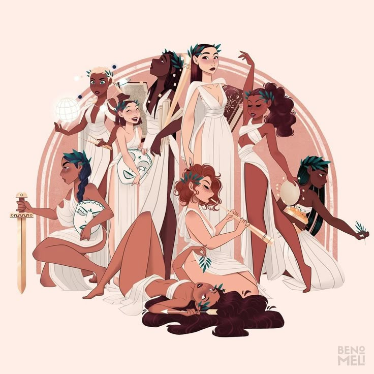
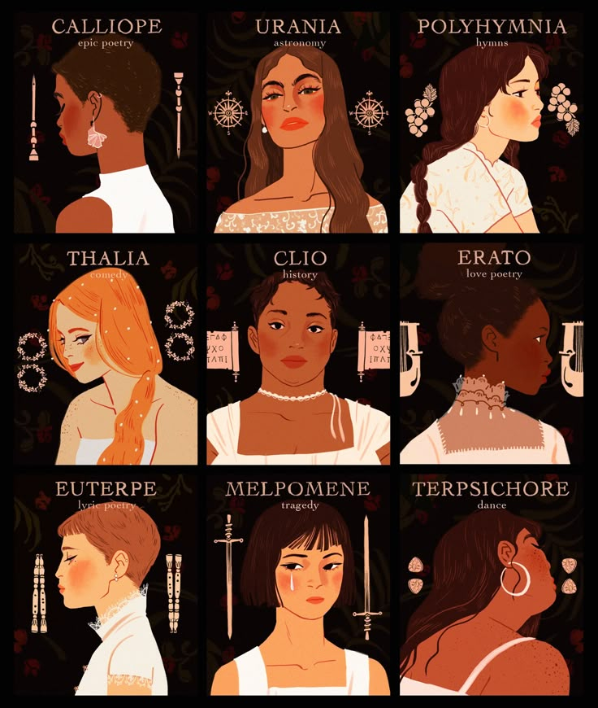

 |
En la mitología griega, las Musas eran divinidades inspiradoras de las artes y las ciencias. Hijas de Zeus y Mnemósine, se consideraban guardianas del conocimiento y del talento creativo. Cada una de las nueve Musas tenía un ámbito específico: desde la poesía épica y la lírica, hasta la danza, la historia y la astronomía. Su presencia simbolizaba la chispa divina que guía al artista, recordando que la creación poética no es solo un acto humano, sino también un don que conecta con lo trascendente. |
La importancia de las Musas radica en que representan la inspiración y la fuerza creadora que impulsa al ser humano a expresarse. En la antigüedad, los poetas invocaban a las Musas al inicio de sus obras para pedir ayuda en la composición, reconociendo que la poesía era un puente entre lo humano y lo divino. Más allá de la mitología, las Musas siguen siendo un símbolo de creatividad y de la necesidad de encontrar fuentes de inspiración para dar forma a las ideas. En la cultura actual, hablar de “la musa” es hablar de aquello que despierta la imaginación y hace posible el arte. |
 |